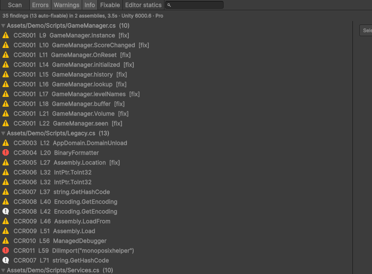
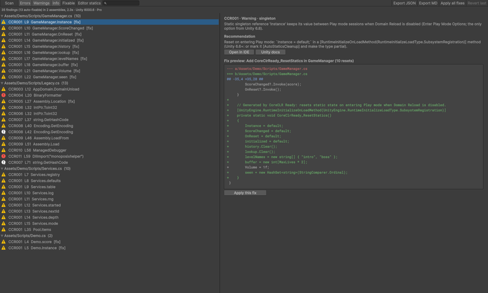
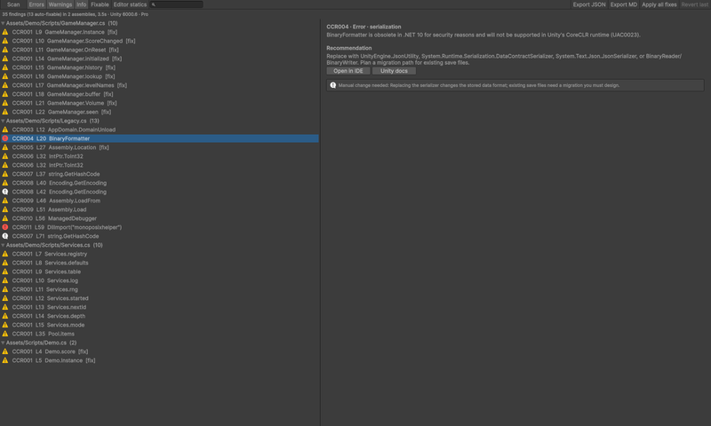
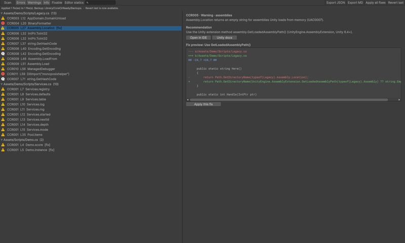
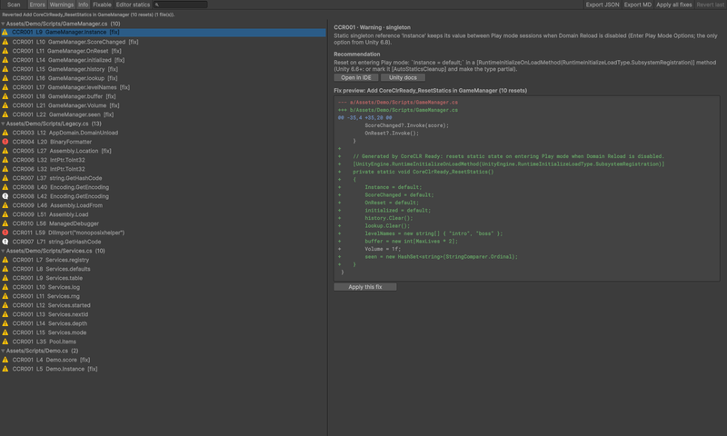
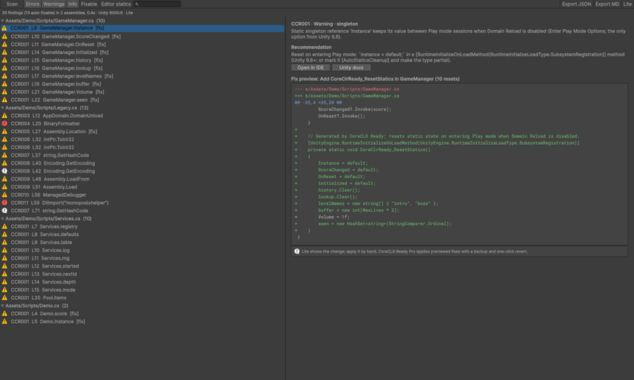
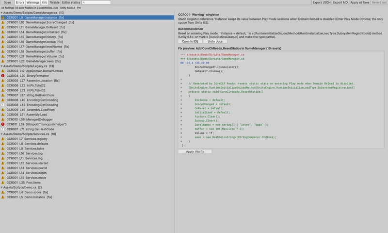

CoreCLR Ready
Find the code that breaks with Domain Reload off and on CoreCLR, and see the fix before anything changes.
Unity is moving from Mono to the CoreCLR runtime, and turning off Domain Reload in Enter Play Mode Options
makes entering Play mode faster (from Unity 6.8 it is the only option). Both changes break code that used to work: static fields
keep their values between Play sessions, AppDomain APIs stop behaving the same, BinaryFormatter
goes away. CoreCLR Ready scans your project's C# for these patterns, explains each one, links to Unity's
documentation and, where a safe mechanical change exists, shows the exact edit as a diff.


[fix] marks findings with an automatic fix.Lite and Pro
Lite (free)
- Scans
Assets/and embedded or local packages with the same defines and references Unity uses. - Eleven rules (CCR001–CCR011) with explanations and links to Unity's documentation.
- Diff preview of every automatic fix.
- JSON and Markdown reports; batchmode command with a CI exit code.
- Read-only: Lite never changes your files.
Pro
- Everything in Lite.
- Apply one fix or all fixes after reviewing the preview.
- Automatic backup of every changed file, and one-click Revert last that refuses to overwrite later edits.
- Command-line apply and revert for CI.
- Scan of precompiled managed DLLs (detect-only).
What it checks
Mutable static state that survives Play mode with Domain Reload off (fields, events, auto-properties,
singletons), AppDomain.GetAssemblies and DomainUnload, BinaryFormatter,
Assembly.Location, pointer-to-int conversions, string.GetHashCode used as a stable value,
non-default encodings, Assembly.LoadFile/LoadFrom, ManagedDebugger and
[DllImport] into Mono runtime libraries. The rules table in the manual
lists which ones have an automatic fix.
The analysis is static: it can't know whether a static value is meant to persist. Those cases are reported, not fixed, and you can silence one with a comment.
Screenshots












Compatibility
| Area | Status |
|---|---|
| Unity versions | 6000.0 or newer. Tested on 6000.0.85f1 (LTS) and 6000.6.6f1. 6000.1 to 6000.5 and 6000.7 have not been tested yet. |
| Editor platforms | Tested in the Linux editor (window, batchmode, tests, apply/revert). Windows and macOS editors not tested yet. |
| Player builds | Not affected: editor-only, nothing is added to builds. |
| Render pipelines | Not applicable (no runtime content). |
| Dependencies | Lite: none. Pro: Unity's com.unity.nuget.mono-cecil package (installed automatically) and Lite. |